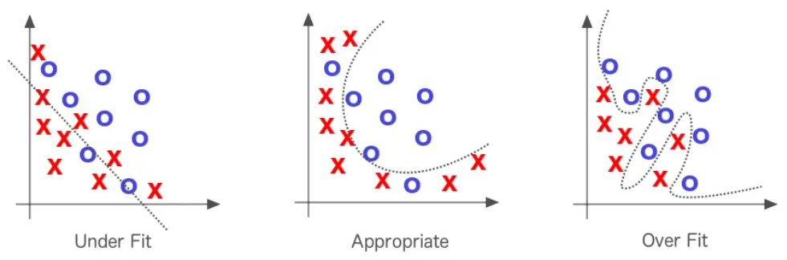
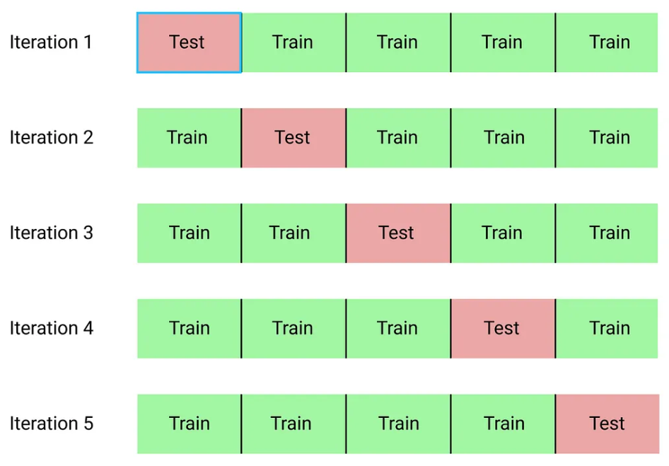
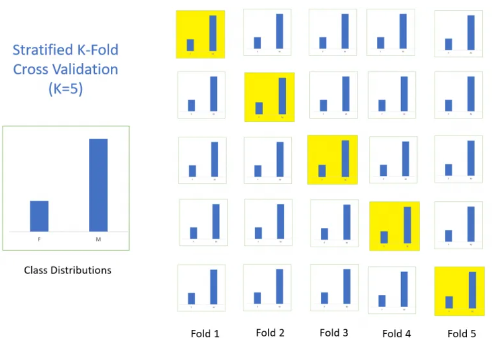

Introduction à la cross validation#
La validation croisée ou cross-validation est une méthode permettant d’évaluer précisement un modèle de deep learning sur l’ensemble des données disponibles pour l’entrainement. Ce cours est inspiré du blogpost et les figures utilisées sont également tirées de ce blogpost.
Problème des modèles de Deep Learning#
Comme on l’a vu précedemment, un des problèmes des modèles de deep learning est l’overfitting. Pour en apprendre plus sur l’overfitting, vous pouvez vous réferer au cours bonus sur la régularisation. En effet, il ne suffit pas d’avoir un modèle performant sur les données d’entrainement, il faut surtout être performant sur les données de test.

La cross-validation est une technique permettant de détecter plus facilement l’overfitting et d’ajuster plus précisement les hyperparamètres pour lutter contre l’overfitting.
La cross-validation, comment ça marche ?#
La technique de cross-validation peut être décompée en 3 phases :
On va partionner notre dataset en un nombre de subsets choisi.
On va écarter un des subsets et entraîner le modèle sur le reste des subsets.
On va finalement tester notre modèle sur le subset que l’on avait écarté pour l’entraînement.
On répete les deux derniers points jusqu’à ce que tous les subsets aient été évalués. Si on sépare notre dataset en 10 subsets, alors il faudra entraîner le modèle 10 fois. Une fois que tous les entraînements sont terminés, on peut évaluer notre modèle en prenant la moyenne de ses performances sur les différents entrainements.

Il existe 3 type de cross-validation qui sont assez proches les uns des autres : le k-fold cross validation, le stratified k-fold cross validation et le leave one out cross validation (LOOCV).
K-fold cross validation#
Le k-fold cross validation est la version la plus classique. On divise notre dataset en k subsets. On entraîne k modèles à chaque fois avec un différent set de validation et on fait la moyenne des scores pour évaluer le modèle de manière générale.

Comment choisir le paramètre k : En général, on va choisir k de sorte à ce que les subset soit suffisamment important pour representer statistiquement le dataset original. La choix de k va aussi dépendre du temps et des ressources dont l’on dispose car plus k est grand, plus on doit faire d’entrainements.
En général, k=10 est une bonne valeur.
Stratified K-fold cross validation#
Cette méthode est presque identique à la k-fold cross validation de base mais on rajoute une contrainte. On spécifie que chaque subset doit la même distribution de classes. Cela permet de juger chaque subset sur un pied d’égalité en terme performance relative à chaque classe.

Leave one out cross validation#
Encore une fois, cette méthode est très proche de la classique k-fold cross validation puisqu’il s’agit simplement de cette méthode avec k=n (n étant le taille du dataset). A chaque fois, on va entraîner le modèle sur toutes les données sauf une. Cela va revenir à entraîner notre modèle n fois ce qui peut vite être couteux en temps et en ressources. L’avantage de cette méthode est que l’on peut entraîner le modèle sur presque toutes les données du dataset. En pratique, cette méthode ne s’utilise pas trop sauf dans des cas où l’on fait un finetuning sur peu de données (et à ce moment là, elle est très interessante).
Avantages et intêrets de la cross-validation#
La cross validation a plusieurs avantages :
On va détecter l’overfitting plus facilement et on va pouvoir régler les hyperparamètres en conséquence.
Dans un cadre scientifique, évaluer les modèles avec la cross validation permet une évaluation plus fiable et supprime en partie la chance (que l’on pourrait avoir lorsque l’on sépare aléatoirement nos données de train et de validation).
Si vous pouvez vous le permettre (suffisament de temps et de ressources de calcul), je vous inviterai à utiliser la cross validation systématiquement.